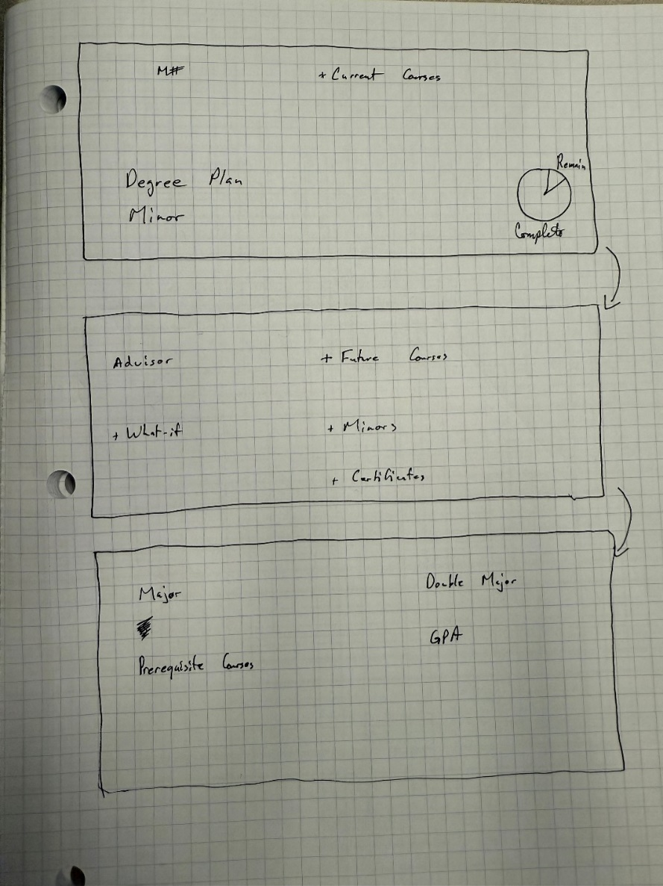
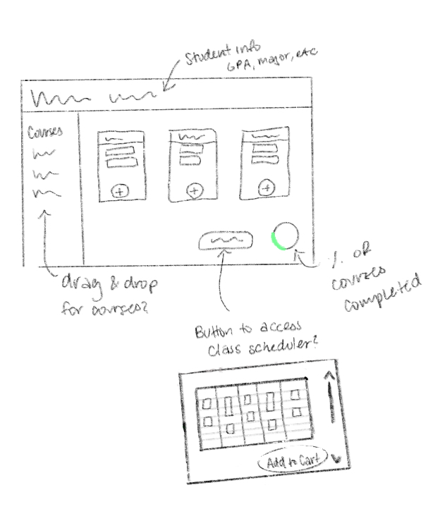
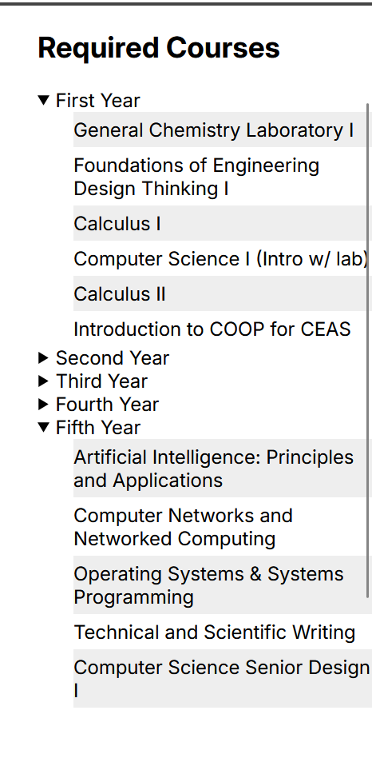
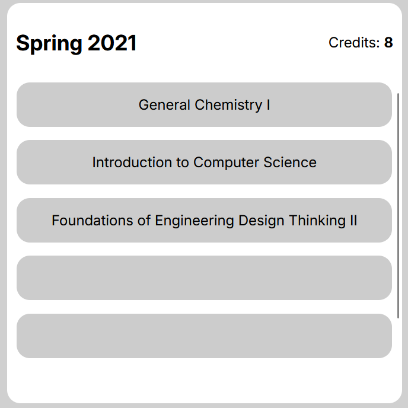
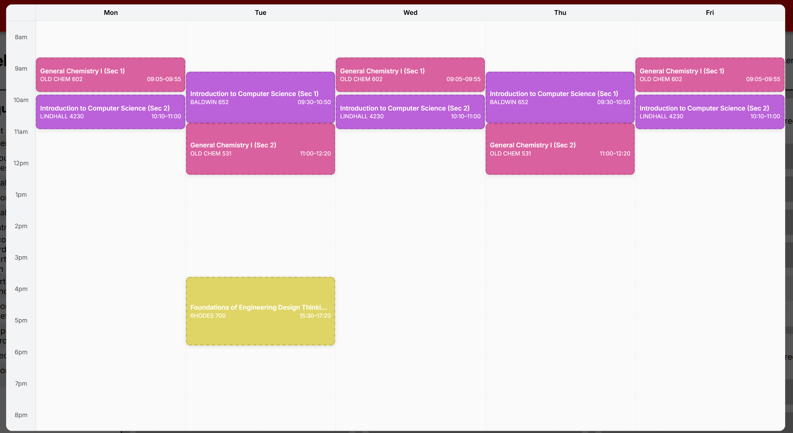

YouSchedule is a fundamental redesign of a popularly used software application within the University of Cincinnati for scheduling classes and planning credits towards graduation. With courses being removed or not available, we want to enhance the self-sufficiency of students to schedule their classes for a semester. We also feel that if we are eligible for certificate or minor (or at least close to being eligible for one), the enhancement will recommend courses based on potential benefits for the student.
In our initial sketches, we felt it was important to include a visual graph to show students how far they are into their current degree. This feature was included in a previous version of UC’s course planning site and has been removed from the current one. This feature allowed users to visually see how far they are into their current degree and provide motivation, so it was something we wanted to include in the redesign. Another feature which is not included on UC’s current site is the ability to add/view minors and certificates to their course planning. We felt that this was an important feature to add as it would allow users to see what options they have and how it could fit into their courses. Other information that we wanted to include was the student’s major, GPA, advisor, and a link to the “what if reports”.
When refining our sketches, there were some tweaks that we wanted to make so that the user could easily access the information that they wanted. While the first sketch had all the information we wanted to include, the layout could be confusing/overwhelming to users. In our second sketch, we had a dashboard layout that still would have user information and allow them to view/add courses. This new layout provides more of a visual separation and makes it easier for the user to navigate. For this design, we wanted the courses to be separated by semester and allow the user to add courses through a search or a dropdown menu. We also wanted to allow the user to view what their course schedule would look like and allow them to add their selected courses to their cart. An issue with this design is implementation, as the search or dropdown menu could be difficult to do, given the deadline.
In our final sketch, we decided to add a section to the left that would hold the courses that the user would be able to drag and drop. This method would be easier to implement than the search or dropdown. We also moved the percentage of courses completed to the bottom, as in the previous sketch, the placement took up a lot of space. We moved the student’s information to the top, because while it is important information, its not necessary to schedule classes. Finally, we added a button to the bottom of the screen that would allow students to see the class scheduler. This placement makes it easier for students to see and will make them more likely to use it.
Provides the user with reccomended courses based on the year they're in. If the course is already accounted for in the semester views, they will no longer appear on the side, making it a sort of a checkoff list.
Users can quickly and easily drag and drop the classes they want to take to which semester they want to take them in.
Shows the user which courses they have planned for each semester, and when they click on it it opens the scheduler, which allows the user to directly schedule the courses for each semester.
Interface in which users can see each block of time every section takes up, and allows them to select which section they want to take. Once they solidify a choice, it removes the other sections of the same class from the same time frame, as well as any other courses which would take up the same time.
The application was implemented using a Svelte based front-end web framework, and JavaScript. This was done to make it easy for the whole group to develop using the framework and language set of this class. The libraries used include the default base projects like svelte-js and Vite. The overall code structure is set up to be easy to browse and add on to. The main .svelte files are located within the /src/components folder, where the /src/lib folder holds the main JavaScript files, as well as assets, layouts, and routes. This makes it easy to navigate, and modular to develop for.
AI was used in limited circumstances throughout the application. Mainly used for bug fixing, and dummy data generation, we found the strengths of generative AI’s like ChatGPT very good for these areas. Upon making any large changes, the generative nature of it would cause it to hallucinate, making it limited in reliability. As such, we limited the scope of its use to just these two key areas.